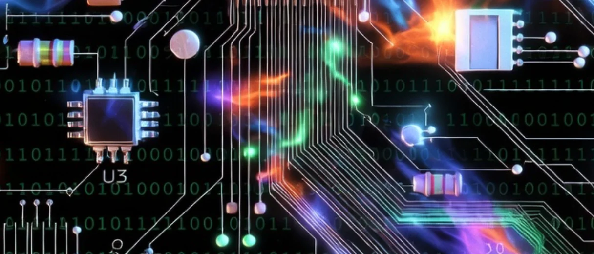

Daily Journal
Daily Journal: What I'm Thinking About
My running journal of what I'm building, reading and working through, written as it happens.
- October 18, 2026Mission Finds You
- October 17, 2026light me up atrocity
- October 2, 2026The Battle is This Way